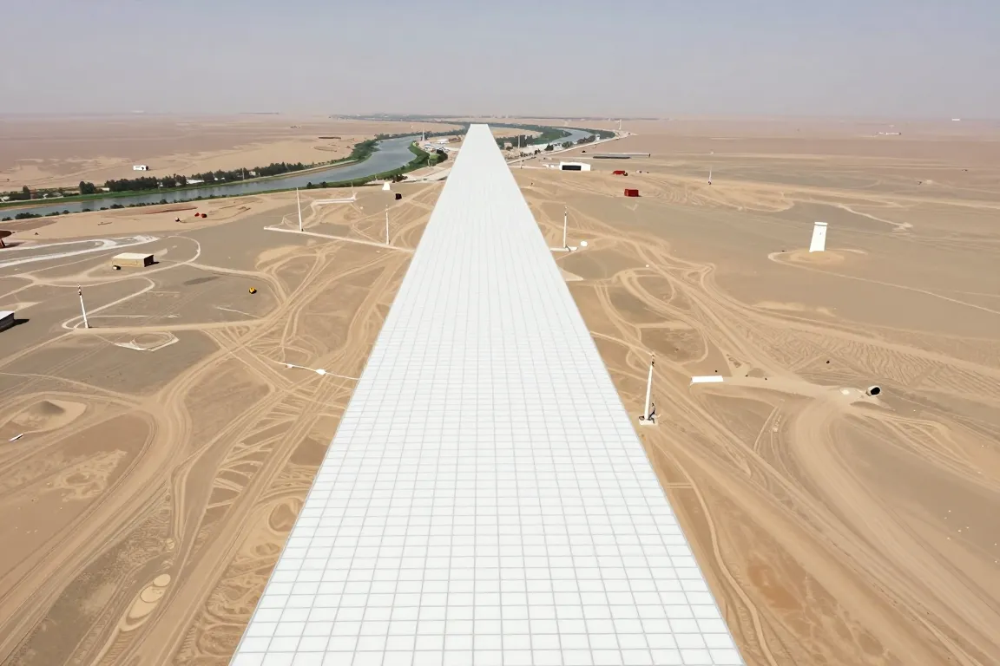

Архитектура, живущая на бумаге, в коллаже и в кино. Группы в Лондоне, Флоренции и Москве рисовали бесконечные сетки, ходячие города и невозможные дома, чтобы атаковать рынок и государство.

Главная идея
Рисунок — это поступок: если настоящий город служит рынку, архитектор должен нарисовать город, который не построит ни один рынок.
Принципы дизайна
Рисуйте проект как коллаж, кадр из фильма или офорт, а не как план.
Ставьте одну огромную простую форму против обычного ландшафта.
Берите бесконечную сетку как нейтральную раму для жизни.
Заимствуйте образы из поп-культуры, машин и рекламы.
Делайте проект критикой, которую читатель должен расшифровать.
Держите масштаб невозможным: города, которые ходят, или монументы, огибающие Землю.